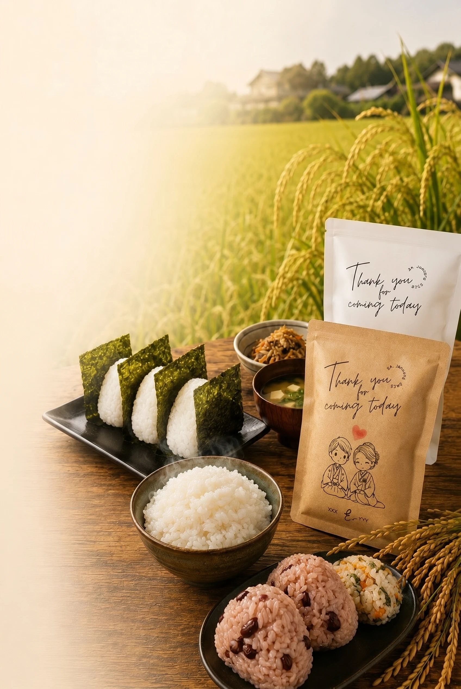
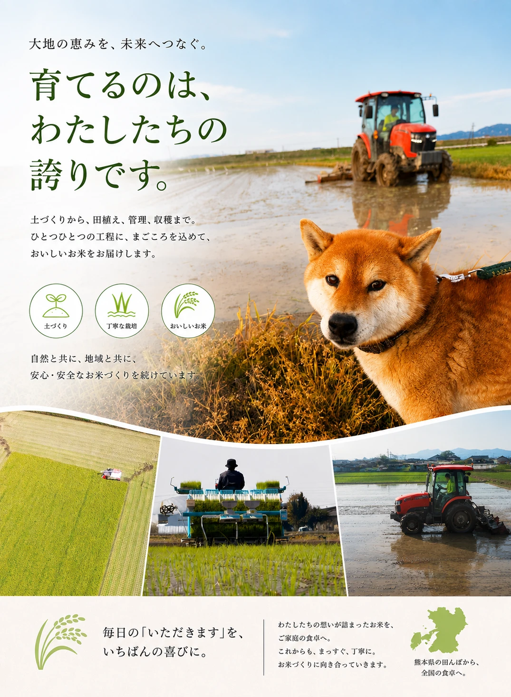
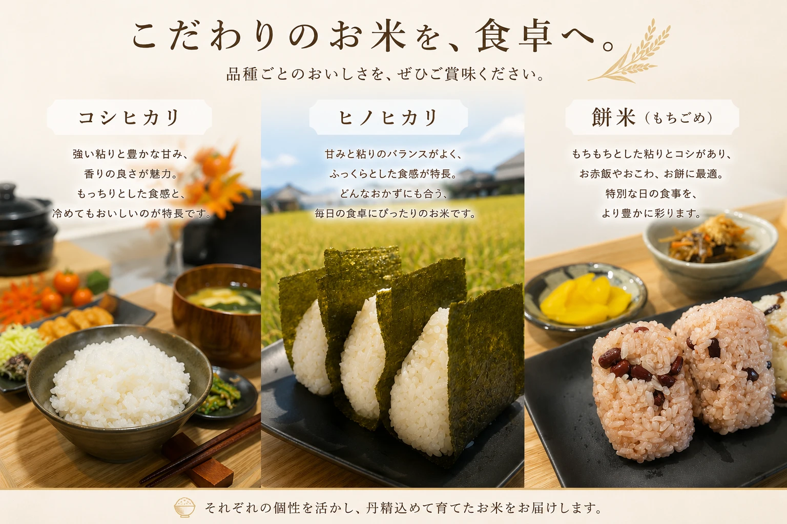
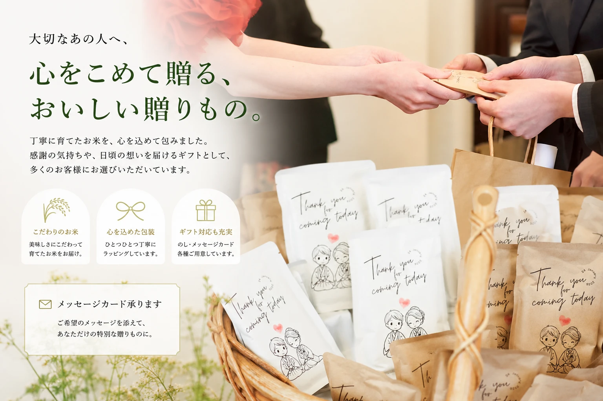
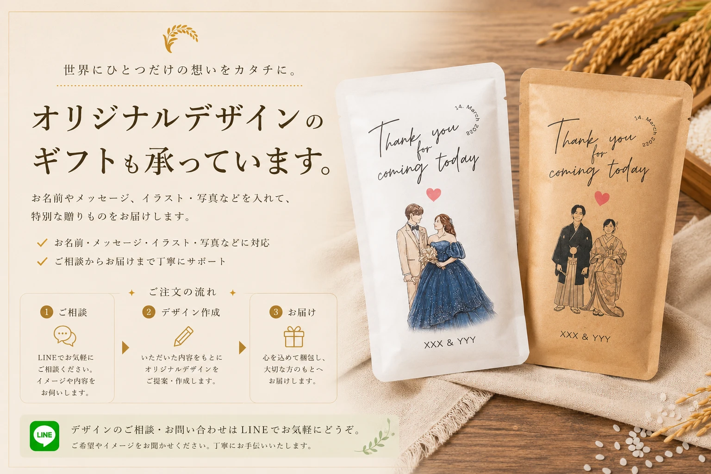

対象商品の会員価格や購入方法を、LINEからご確認いただけます。
会員価格で
お米を購入
購入前の相談や
ギフト相談
配達や
大口注文の相談
マルシェ・
販売情報をお届け

大きな農家ではありません。
だからこそ、一枚一枚の田んぼと
じっくり向き合いながら、
家族で大切に育てています。
画像では伝えきれない、選び方の目安を。

しっかりした甘みや粘り、香りを楽しみたい方へ。白ごはんそのもののおいしさを味わいたい日や、少し特別感のある食卓におすすめです。
甘み・粘り・食感のバランスを重視したい方へ。和食にも洋食にも合わせやすく、毎日のごはんやお弁当にも選びやすいお米です。
お赤飯・おこわ・お餅など、特別な日の食卓に。いつものごはんとは少し違う、季節感のある一品を作りたい方におすすめです。
通常米：ヒノヒカリ・コシヒカリの3kg / 5kgをご案内しています。
餅米：1kg袋〜ご用意しています。
在庫：収穫量に限りがあるため、品種や時期によっては欠品する場合があります。
大口注文：30kg / 60kgなどは、在庫状況に応じてご相談ください。

花やスイーツもいいけれど、
毎日食べるものだからこそ、
もらって嬉しい。
そんな贈り物に、選ばれています。

イラスト、お写真、手書きメッセージ。
ちょっとしたアイデアをかたちにして、
その人にしか贈れない一品に。
出産内祝いや結婚、特別な日にどうぞ。
多くのお客様に
選ばれました
オリジナルギフト
対応実績
地域に根ざした
お米づくり
幅広い販売
実績あり
毎日のごはんに合うお米選びも、
大切な方へのギフト相談も、
LINEからお気軽にどうぞ。